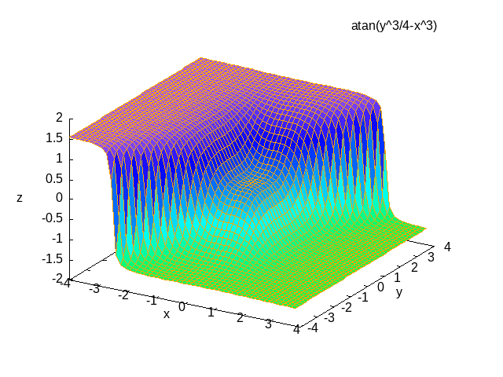

Hello test1
hello

Publishing
(defun org-blog-sitemap-format-entry (entry _style project) "Return string for each ENTRY in PROJECT." '(("blog" :base-directory "~/blog/" :publishing-directory "~/public_html" :section-numbers nil :publishing-function org-html-publish-to-html :table-of-contents nil :auto-sitemap t :sitemap-format-entry org-blog-sitemap-format-entry :makeindex t :style "<link rel=\"stylesheet\" href=\"../other/mystyle.css\" type=\"text/css\"/>") ("images" :base-directory "~/blog/" :base-extension "jpg\\|gif\\|png" :publishing-directory "~/public_html" :publishing-function org-publish-attachment)))